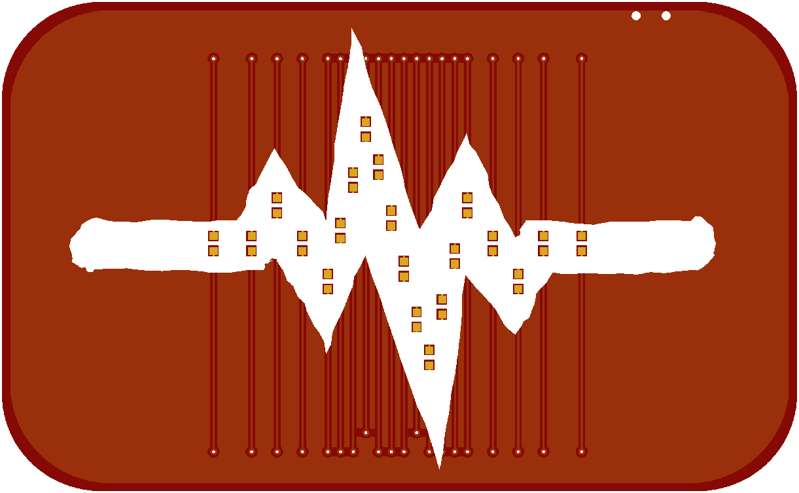
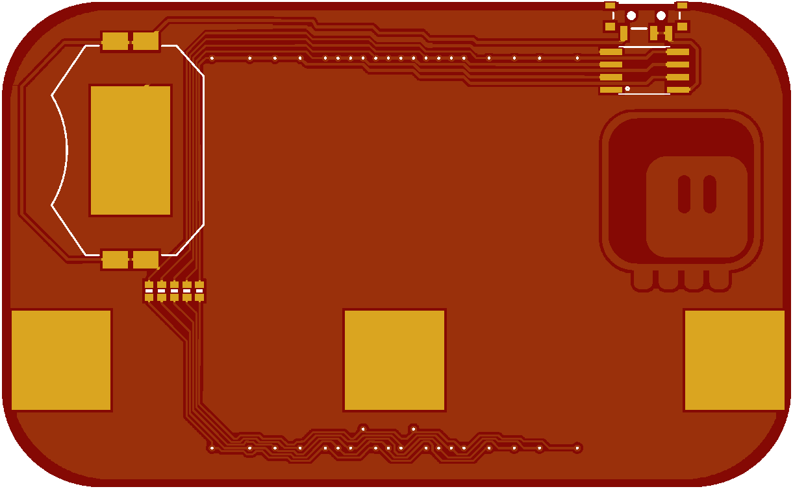

Blinking Lights¶
Published on 2018-08-04 in Electronic Barrette Hub.
With the clasp out of the way, it’s time to design the actual PCB. I decided to start with something simple: a signal line, like a heartbeat, with LED lights running along it. With 5 gpio pins of an attiny45 I can get 20 LEDs if I charlieplex them, so let’s try that.
Unfortunately, charlieplexing requires some rather complex connections, so I will need traces on both sides of the PCB. I tried to at least make them look consistent, so that they won’t be too jarring. The back of the board is a little bit more complex:
As you can see, there is some fine detail in there. That braid on the bottom almost looks like a decorative pattern — maybe I will use that in some other design. Otherwise, there is nothing special here: battery, attiny, power switch, resistors and three pads for soldering the clasp.
The PCB is now ordered and when it arrives I can start programming.